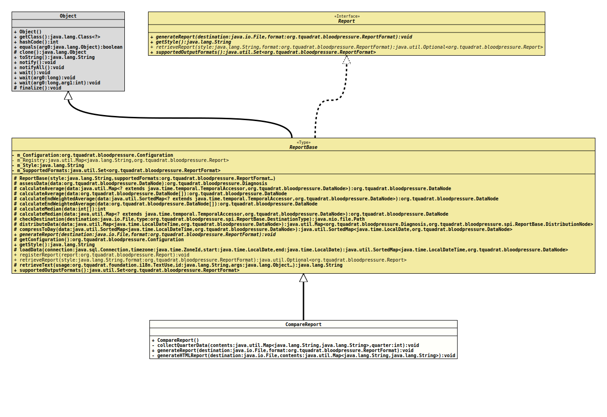

java.lang.Object
org.tquadrat.bloodpressure.spi.ReportBase
org.tquadrat.bloodpressure.report.CompareReport
- All Implemented Interfaces:
Report
@ClassVersion(sourceVersion="$Id: CompareReport.java 151 2022-03-15 20:39:31Z tquadrat $")
@API(status=STABLE,
since="0.0.1")
public final class CompareReport
extends ReportBase
An implementation of
Report
that provides a report comparing the last two full quarters.- Author:
- Thomas Thrien (thomas.thrien@tquadrat.org)
- Version:
- $Id: CompareReport.java 151 2022-03-15 20:39:31Z tquadrat $
- Since:
- 0.0.1
- UML Diagram
-

UML Diagram for "org.tquadrat.bloodpressure.report.CompareReport"
{kind=link}
-
Nested Class Summary
Nested classes/interfaces inherited from class org.tquadrat.bloodpressure.spi.ReportBase
ReportBase.DestinationType, ReportBase.DistributionNode -
Constructor Summary
Constructors -
Method Summary
Modifier and TypeMethodDescriptionprivate final voidcollectQuarterData(Map<String, String> contents, int quarter) Collects the data for one quarter.private final voidgenerateHTMLReport(File destination, Map<String, String> contents) Generates the report inReportFormat.HTMLorReportFormat.HTML_EMBEDDEDformat.final voidgenerateReport(File destination, ReportFormat format) Generates the report and writes it to the destination from the configuration.Methods inherited from class org.tquadrat.bloodpressure.spi.ReportBase
assessData, calculateAverage, calculateAverage, calculateEndWeightedAverage, calculateEndWeightedAverage, calculateMedian, calculateMedian, checkDestination, compressToDay, distributeData, getConfiguration, getStyle, loadData, registerReport, retrieveReport, retrieveText, supportedOutputFormats
-
Constructor Details
-
CompareReport
public CompareReport()Creates a new instance ofCompareReport.
-
-
Method Details
-
collectQuarterData
private final void collectQuarterData(Map<String, String> contents, int quarter) throws IOException, SQLExceptionCollects the data for one quarter.- Parameters:
contents- The target for the collected data.quarter- The number of the quarter to process. 0 is the current quarter, -1 is the last quarter before the current, and so on.- Throws:
IOException- A problem occurred when creating the chart.SQLException- A problem was encountered when retrieving the data from the database.
-
generateReport
public final void generateReport(File destination, ReportFormat format) throws IOException, SQLException Generates the report and writes it to the destination from the configuration.- Specified by:
generateReportin interfaceReport- Specified by:
generateReportin classReportBase- Parameters:
destination- The destination for the generated report.format- The output format for the report.- Throws:
IOException- A problem was encountered when writing the report to the destination.SQLException- A problem was encountered when retrieving the data from the database.
-
generateHTMLReport
private final void generateHTMLReport(File destination, Map<String, String> contents) throws IOExceptionGenerates the report inReportFormat.HTMLorReportFormat.HTML_EMBEDDEDformat.- Parameters:
destination- The output file.contents- The map with the report data.- Throws:
IOException- An error occurred while writing to the destination.
-